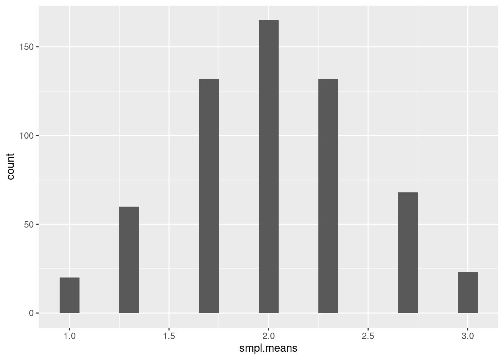
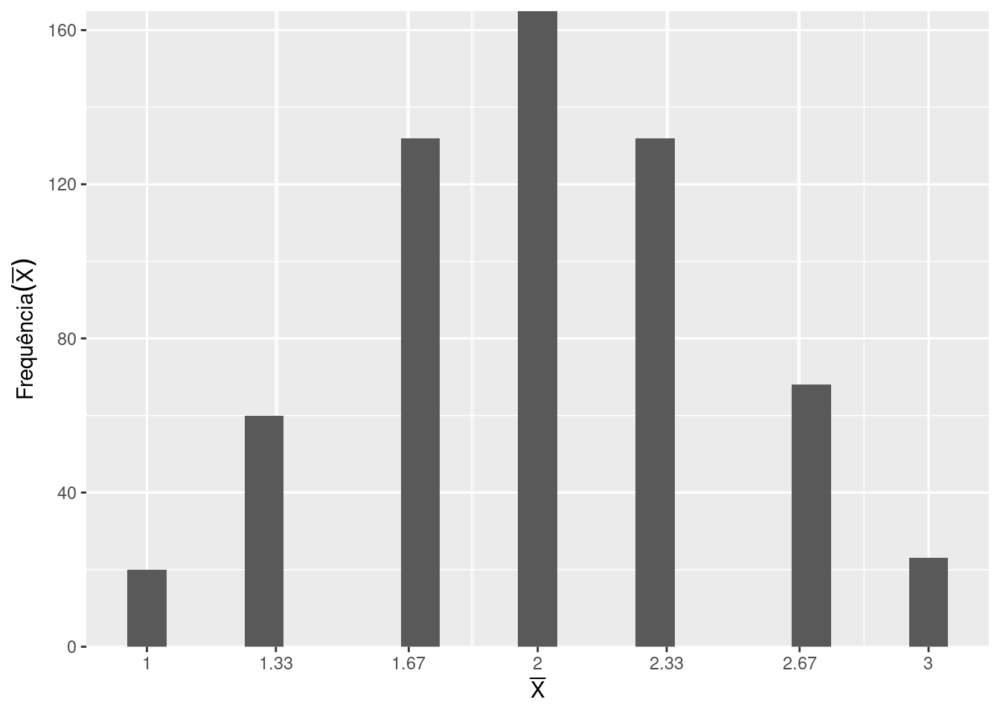

# Instala o pacman caso não esteja disponível
if (!requireNamespace("pacman", quietly = TRUE)) {
install.packages("pacman")
}
# Instala e carrega os pacotes necessários
pacman::p_load(
ggplot2
)Teorema do Limite Central no R
Introdução
O Teorema do Limite Central (TLC) é um dos resultados fundamentais da Estatística. Ele possui um papel central na inferência estatística porque permite compreender o comportamento das médias amostrais mesmo quando a população original não possui uma distribuição Normal.
Neste tutorial, vamos estudar o TLC tanto do ponto de vista teórico quanto computacional, utilizando o R para realizar simulações e visualizar o comportamento das médias amostrais.
A ideia principal será simples: começaremos com uma população que não possui distribuição Normal, retiraremos repetidamente amostras dessa população e calcularemos suas médias. Em seguida, observaremos a distribuição dessas médias.
O Teorema do Limite Central
Antes de realizar a simulação, é importante compreender o que estamos tentando observar.
Considere uma população aleatória representada por uma variável aleatória \(X\), com média populacional \(\mu\) e variância \(\sigma^2\). Retiramos dessa população uma amostra aleatória de tamanho \(n\):
\[ X_1, X_2, \ldots, X_n \]
A média amostral é definida por:
\[ \bar{X} = \frac{1}{n}\sum_{i=1}^{n}X_i \]
O Teorema do Limite Central estabelece, sob condições apropriadas, que à medida que o tamanho da amostra \(n\) aumenta, a distribuição da média amostral \(\bar{X}\), devidamente padronizada, se aproxima de uma distribuição Normal padrão.
Formalmente:
\[ \frac{\bar{X}-\mu}{\sigma/\sqrt{n}} \xrightarrow{d} N(0,1) \]
A notação \(\xrightarrow{d}\) significa convergência em distribuição.
Portanto, o resultado não afirma que a população original se torna Normal. O que se aproxima de uma distribuição Normal é a distribuição amostral da média.
Para tamanhos de amostra suficientemente grandes, podemos representar essa aproximação aproximadamente por:
\[ \bar{X} \overset{\text{aprox.}}{\sim} N\left( \mu, \frac{\sigma^2}{n} \right) \]
Essa expressão será particularmente importante para compreender os resultados das simulações realizadas neste tutorial.
População versus distribuição amostral
Essa distinção é fundamental para compreender o TLC.
Imagine uma população cuja distribuição seja claramente não Normal. Podemos retirar dessa população uma amostra, calcular sua média e repetir esse procedimento muitas vezes.
Por exemplo:
- Retiramos uma amostra de tamanho \(n\).
- Calculamos sua média \(\bar{X}_1\).
- Retiramos outra amostra.
- Calculamos \(\bar{X}_2\).
- Repetimos o procedimento muitas vezes.
Ao final, teremos várias médias:
\[ \bar{X}_1,\bar{X}_2,\bar{X}_3,\ldots,\bar{X}_B \]
onde \(B\) representa o número de amostras simuladas.
Essas médias formam uma nova distribuição, chamada distribuição amostral da média.
É essa distribuição que será estudada neste tutorial.
Importante: a população original e a distribuição amostral da média são objetos diferentes. A população descreve os valores individuais \(X\), enquanto a distribuição amostral descreve o comportamento de \(\bar{X}\) quando o processo de amostragem é repetido.
Um exemplo com uma população não Normal
Neste tutorial utilizaremos uma população extremamente simples:
\[ X \in \{1,2,3\} \]
com probabilidades:
\[ P(X=1)=P(X=2)=P(X=3)=\frac{1}{3} \]
Essa população possui uma distribuição uniforme discreta. Portanto, a população original não possui o formato de uma distribuição Normal.
Sua função de probabilidade pode ser representada por:
\[ P(X=x)= \begin{cases} \frac{1}{3}, & x\in\{1,2,3\} \\ 0, & \text{caso contrário} \end{cases} \]
A média populacional é:
\[ \mu=E(X) \]
e, neste caso:
\[ \mu = 1\left(\frac{1}{3}\right) + 2\left(\frac{1}{3}\right) + 3\left(\frac{1}{3}\right) =2 \]
Portanto:
\[ \mu=2 \]
Esperamos, consequentemente, que as médias amostrais se concentrem ao redor de \(2\).
O que acontece quando calculamos várias médias?
Considere inicialmente amostras de tamanho \(n=3\).
Uma possível amostra seria:
\[ (1,2,3) \]
cuja média é:
\[ \bar{X}=\frac{1+2+3}{3}=2 \]
Outra amostra poderia ser:
\[ (1,1,2) \]
com média:
\[ \bar{X}=\frac{1+1+2}{3}=1{,}33 \]
Outra poderia ser:
\[ (3,3,2) \]
com média:
\[ \bar{X}=\frac{3+3+2}{3}=2{,}67 \]
Se repetirmos esse processo centenas ou milhares de vezes, obteremos uma grande quantidade de médias amostrais.
O histograma dessas médias permite visualizar a distribuição amostral da média.
É justamente nesse ponto que o R se torna uma ferramenta estatística poderosa: em vez de apenas afirmar teoricamente que a distribuição das médias se aproxima da Normal, podemos simular o processo e observar o fenômeno acontecendo.
Propriedades da média amostral
Além da forma da distribuição, o TLC está relacionado a propriedades importantes da média amostral.
Se as observações são independentes e possuem média \(\mu\) e variância \(\sigma^2\), então:
\[ E(\bar{X})=\mu \]
Ou seja, a média da distribuição amostral das médias é igual à média da população.
A variância da média amostral é:
\[ \operatorname{Var}(\bar{X})=\frac{\sigma^2}{n} \]
Consequentemente, o desvio-padrão da distribuição das médias, chamado erro-padrão da média, é:
\[ SE(\bar{X})=\frac{\sigma}{\sqrt{n}} \]
Esse resultado explica por que as médias amostrais ficam cada vez mais concentradas em torno da média populacional quando aumentamos o tamanho da amostra.
Por exemplo, se aumentarmos \(n\) de \(4\) para \(16\), teremos inicialmente:
\[ SE(\bar{X}) = \frac{\sigma}{\sqrt{4}} = \frac{\sigma}{2} \]
e, posteriormente:
\[ SE(\bar{X}) = \frac{\sigma}{\sqrt{16}} = \frac{\sigma}{4} \]
Portanto, aumentar o tamanho da amostra reduz a variabilidade das médias amostrais.
O papel do tamanho da amostra
Uma das ideias mais importantes do TLC é que o comportamento da distribuição amostral depende do tamanho da amostra.
Podemos imaginar o seguinte experimento:
- \(n=3\): as médias ainda apresentam uma distribuição relativamente discreta e podem não parecer muito próximas de uma Normal;
- \(n=10\): a distribuição das médias começa a adquirir uma forma mais suave;
- \(n=30\): a aproximação à Normal pode se tornar bastante evidente;
- \(n=100\): a distribuição das médias tende a ficar ainda mais concentrada em torno da média populacional.
É importante destacar que não existe um tamanho de amostra universal a partir do qual o TLC “começa a funcionar”.
A velocidade da aproximação depende da distribuição da população original. Para populações muito assimétricas ou com caudas pesadas, amostras maiores podem ser necessárias para que a aproximação Normal seja adequada.
O que o TLC não afirma
Um erro comum é interpretar o Teorema do Limite Central da seguinte maneira:
“Para amostras grandes, os dados seguem uma distribuição Normal.”
Isso não é correto.
O TLC não diz que os valores individuais \(X_1,X_2,\ldots,X_n\) se tornam Normais.
Ele afirma que, sob condições apropriadas, a distribuição da média amostral se aproxima de uma distribuição Normal à medida que \(n\) aumenta.
Portanto, não devemos interpretar:
\[ X_i \xrightarrow{d} N(\mu,\sigma^2) \]
como consequência do TLC.
O resultado relevante é:
\[ \frac{\bar{X}-\mu}{\sigma/\sqrt{n}} \xrightarrow{d} N(0,1) \]
ou, de maneira aproximada para \(n\) suficientemente grande:
\[ \bar{X} \overset{\text{aprox.}}{\sim} N\left( \mu, \frac{\sigma^2}{n} \right) \]
Assim, o TLC diz respeito à distribuição amostral da média, e não à distribuição dos valores individuais da população.
Por que isso é tão importante?
O TLC é fundamental porque permite utilizar resultados relacionados à distribuição Normal para fazer inferência sobre populações mesmo quando a distribuição original dos dados não é Normal.
Ele está relacionado a diversas técnicas estatísticas, incluindo:
- construção de intervalos de confiança;
- testes de hipóteses;
- aproximações de distribuições amostrais;
- estimação de parâmetros;
- cálculo de erros-padrão;
- diversos métodos de inferência estatística.
Assim, o TLC fornece uma importante ponte entre uma população possivelmente desconhecida e a possibilidade de realizar inferência estatística a partir de amostras.
O experimento no R
Agora que a teoria é conhecida, pode-se reproduzir o fenômeno computacionalmente com os seguintes passos:
- definir uma população que não possui distribuição Normal;
- definir as probabilidades de ocorrência de cada valor;
- retirar repetidamente amostras dessa população;
- calcular a média de cada amostra;
- armazenar todas as médias;
- construir um histograma da distribuição amostral;
- observar sua forma;
- posteriormente, aumentar o tamanho das amostras e observar o efeito sobre a distribuição.
Dessa maneira, o código R não será apenas uma sequência de comandos. Cada etapa da programação estará diretamente relacionada a um conceito estatístico apresentado anteriormente.
Uma demonstração por simulação
Importando as bibliotecas importantes
Para realizar as visualizações será usado o pacote ggplot2. Primeiramente, será verificado se o pacote pacman está disponível. Caso não esteja, ele será instalado automaticamente. Em seguida, será usado a função p_load() para instalar e carregar os pacotes necessários.
Criando as variáveis importantes
Vamos considerar uma pontuação (amostra) com suas probabilidades de ocorrência. Consideremos também um vetor vazio que irá armazenar as médias de todas as simulações das médias das 3 pontuações. Uma população com probabilidades iguais para os valores 1, 2 e 3 não é Normal, mas isso não significa simplesmente que “a distribuição não seria normal”, ela é uma distribuição uniforme discreta. E justamente isso é ótimo para demonstrar o TLC: começamos com uma população que não é Normal e observamos o comportamento das médias.
values <- c(1,2,3)
probabilities <- c(1/3, 1/3, 1/3)
smpl.means <- NULLGarantindo a reprodutibilidade
set.seed(123)Vetores com as médias de 600 simulações
for(i in 1:600){
smpl <- sample(x=values, prob=probabilities, size=3, replace=TRUE)
smpl.means <- append(smpl.means, mean(smpl))
}Realizando as primeiras visualizações
Usando um gráfico inicial para reconhecer a silhueta da curva normal
ggplot(NULL, aes(x=smpl.means)) +
geom_histogram(binwidth = 0.1)
Especificando melhor os valores no gráfico
# Para rotular melhor os dados é preciso listá-los de forma única
# Para garantir uma legibilidade mais adequada vamos arrendondar para duas casas decimais
# Vamos salvar os resultados em um vetor chamado `m.values` para ser usado na escala x alterada
m.values <- round(unique(smpl.means),2)Refazendo o gráfico com as alterações nas escalas dos eixos x e y
Distribuição amostral das médias
ggplot(NULL, aes(x=smpl.means)) +
geom_histogram(binwidth = 0.1) + # No histograma, o eixo X é dividido em pequenos intervalos (bins). O binwidth determina a largura desses intervalos.
scale_x_continuous(breaks=m.values, label=m.values) + # Ajustando a escala em x
scale_y_continuous(expand = c(0,0)) + # Ajustando a escala em y
labs(x=expression(bar(X)), y=expression(Frequência(bar(X))) #
)